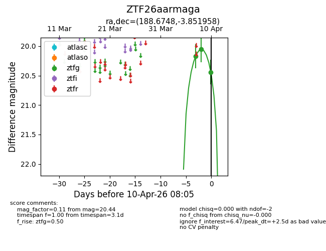
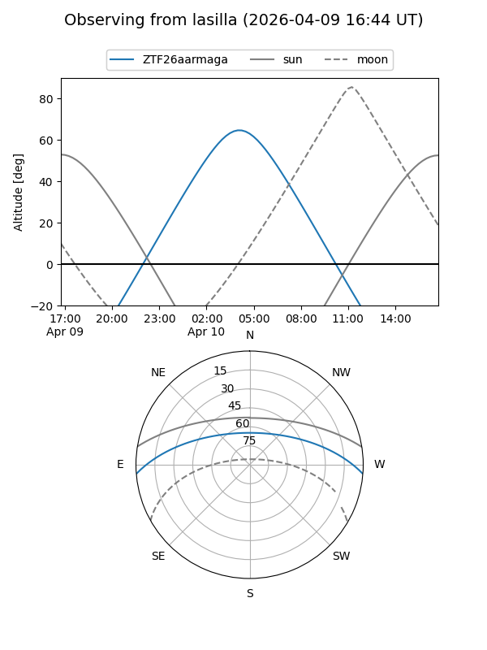
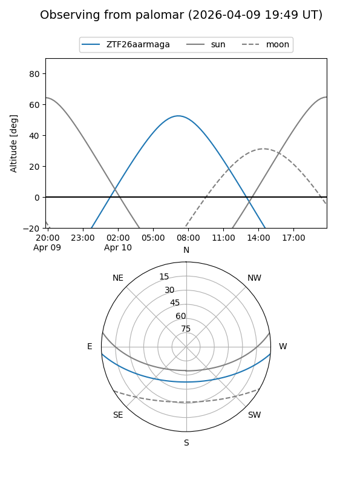
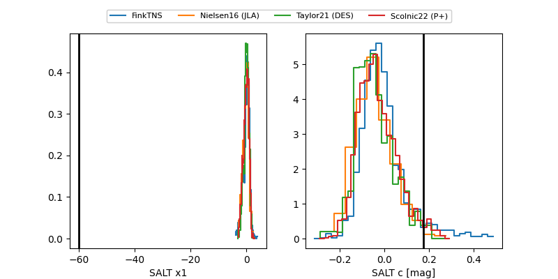

ZTF26aarmaga
Target ZTF26aarmaga at 2026-04-10 08:12
Aliases and brokers:
FINK: link
Lasair: link
ALeRCE: link
alt names
ZTF26aarmaga (ztf,fink_ztf)
Coordinates:
equatorial (ra, dec) = 188.6748,-3.85196
equatorial (HMS+DMS) = 12:34:41.96,-03:51:07.05
galactic (l, b) = (294.8625,+58.75729)
Flags:
Photometry:
last ztfg=20.44
3 ztfg detections
Lightcurve

Visibility


Additional plots
